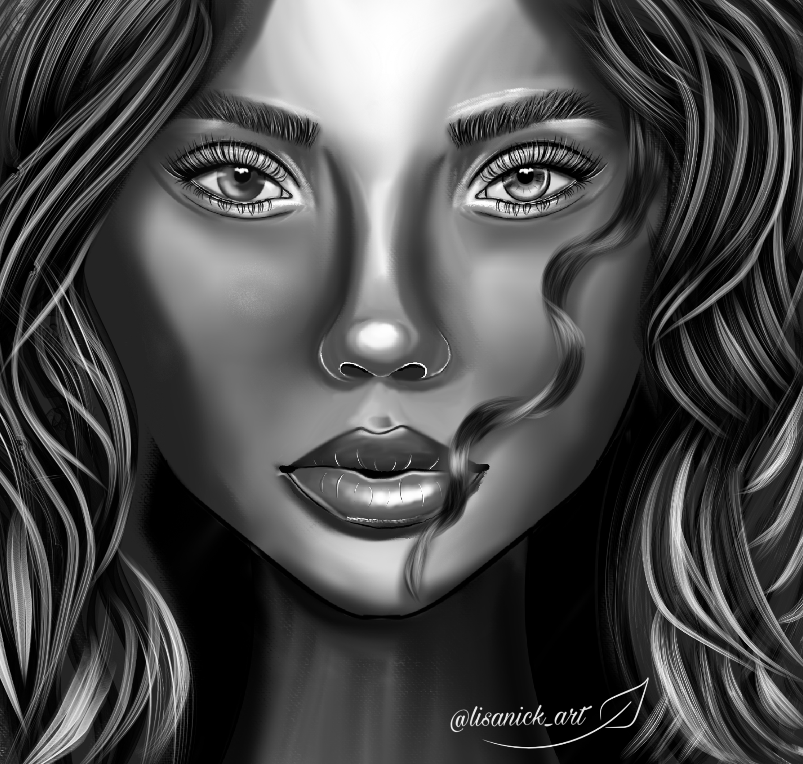

Что такое цифровая живопсь?
Цифровая живопись или Digital painting — это создание цифровых картин с помощью программных имитаций кистей, красок, карандашей и других инструментов, которыми рисуют обычные художники.
Особенности и достоинства цифровой живописи

Многие художники переходят к цифровой живописи, поскольку в долгосрочной перспективе это оказывается более выгодным - меньше затрат на расходные материалы.
Кроме того, работать в графичесокм редакторе удобнее - можно легко убрать ошибку или непонравившийся слой без ущерба для картины в целом.
Также отсутствует необходимость ждать пока высохнут краски, чтобы начать работу над новым слоем - это значительно ускоряет процесс.
Однако, цифровые инструменты - это не волшебная палочка, и сами они шедевр не создадут. Качество цифровой живописи по-прежнему зависит от мастерства и таланта.
Широкие возможности диджитал искусства позволяют художникам больше времени уделять поиску собственного стиля, поэтому в цифровой живописи отсутствует
чёткое разделение на виды, скорее можно говорить о сочетании разных техник. Основными видами цифровой живописи являются имитация традиционной живописи и
фотоарт. В основе фотоарта лежит фотография, которая дорабатывается при помощи живописи. Имитация традиционной живописи используется при создании портретов,
пейзажей и натюрмортов, в то время как фотоарт более популярен у художников игрового концепт-арта, которые используют для ускорения процесса работы
и придания ей большей реалистичности.
Что такое концепт-арт?
Концепт-арт - направление в искусстве, визуально передающее художественный мир и идею большого мультимедийного произведения. Прежде, чем начинают снимать фильм или делать компьютерную игру, кто-то должен придумать, как все это будет выглядеть, нарисовать и показать свой замысел. Такие миры быстрее и проще создавать на компьютере, так их легче трансформировать, если в ходе мозгового штурма у команды появятся новые идеи. Концепт-арт может быть как стилизованным, так и фотореалистичным. Художники, владеющие техникой цифровой живописи, создают множество набросков, передающих дух проектируемого художественного мира.